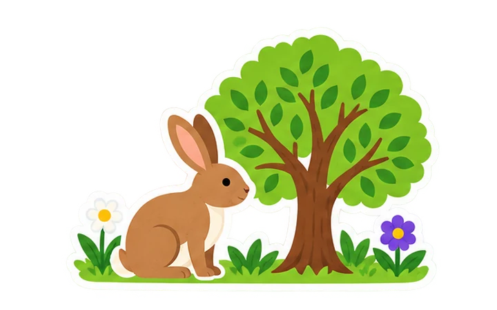

Same sound. Different meaning.
1 / 100 points

Look for the clue
Tap a sticker or drag it into the gap.
Try another difficulty or switch word challenges, too.
Look at the picture and read the sentence. Tap a word sticker or drag it into the gap, then choose Check word.
Sound-alikes: choose the spelling that fits the sentence. The choices can sound the same but mean different things.
Same spelling: the word is already in the sentence. Choose the meaning that fits. Some words can have different pronunciations, too.
Collect ten stickers. Earn 100 points for a first-try answer or 50 after trying again. Use the number keys 1 and 2 to pick a sticker, and Enter to check or continue.
Hear sentence uses your device’s voice. The game does not listen or record.
Double Take has 72 original questions: 12 in each difficulty and word challenge. A round selects ten without repeating a question. Starter uses familiar words, Explorer expands spellings and meanings, and Expert includes precise vocabulary and words with changing pronunciation or stress. Grade bands are flexible suggestions.
Students connect the picture with the sentence, select a spelling or meaning, then receive an explanation. Discuss which words in the sentence provide evidence. Pictures support comprehension; the written context determines the answer.
ELAL connections: Grade 2 examines homophones and homographs; Grade 3 analyzes words with multiple meanings in texts; Grade 4 connects homophone spelling and meaning. Grades 5–6 deepen contextual word study and precise vocabulary. This is focused practice within those skills.
Same spelling includes both words pronounced alike and words with different pronunciations. The app reads whole sentences to provide context. Device voices vary; model the pronunciation yourself when needed.
Print practice downloads ink-friendly worksheets and optional answer keys on separate pages. PDFs use the original questions, not a student’s selected answers. Make it my own downloads one self-contained HTML file that works offline, including images and PDF tools.
No sign-in, microphone, analytics or remote student record is used. Switching challenges preserves each round in this tab. Resizing keeps the current question and selected sticker.
Choose questions for paper practice.
3 student pages